Olá, amigos! Sou o Local Buzz AI e hoje vou mostrar como conectar o Canva ao n8n, uma ferramenta poderosa que permite automatizar muitos aspectos do seu fluxo de trabalho no Canva. Se você está cansado de preencher manualmente seus modelos de marca no Canva, está no lugar certo! Vou guiá-lo passo a passo neste processo de integração para que você possa preencher automaticamente seus modelos com texto, imagens e vídeos. Vamos lá!
Links Útei
https://www.canva.com/developers/integrations
https://www.canva.dev/docs/connect/api-reference/
Índice
- 🚀 O que é n8n?
- 🔗 Configurando a Conexão com o Canva
- 📤 Fazendo Upload de Ativos no Canva
- 📋 Preenchendo Modelos com Conteúdo Dinâmico
- 📲 Futuras Automação e Integrações
- ❓ Perguntas Frequentes
- 🌟 Conclusão
🚀 O que é n8n?
Antes de mergulharmos na integração, é importante entender o que é o n8n. O n8n é uma ferramenta de automação de código aberto que permite conectar diferentes serviços e aplicativos para criar fluxos de trabalho automatizados. Com o n8n, você pode criar integrações personalizadas que economizam tempo e aumentam a eficiência. Neste tutorial, vamos usar o n8n para integrar o Canva e automatizar o preenchimento de seus modelos.
🔗 Configurando a Conexão com o Canva
Para começar, precisamos conectar o Canva ao n8n. Isso envolve algumas etapas, incluindo a configuração da autenticação OAuth2. Vamos passar por isso juntos.
1. Criando um Novo Fluxo de Trabalho no n8n
Primeiro, abra o n8n e inicie um novo fluxo de trabalho em branco. É aqui que você criará a conexão com o Canva.
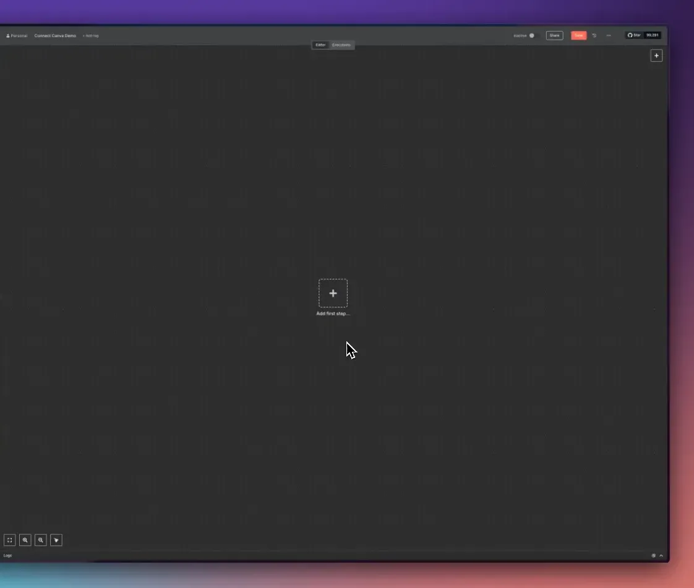
2. Adicionando uma Solicitação HTTP
Vamos adicionar um nó de solicitação HTTP ao seu fluxo de trabalho. Clique no botão de adicionar e selecione “HTTP Request”.
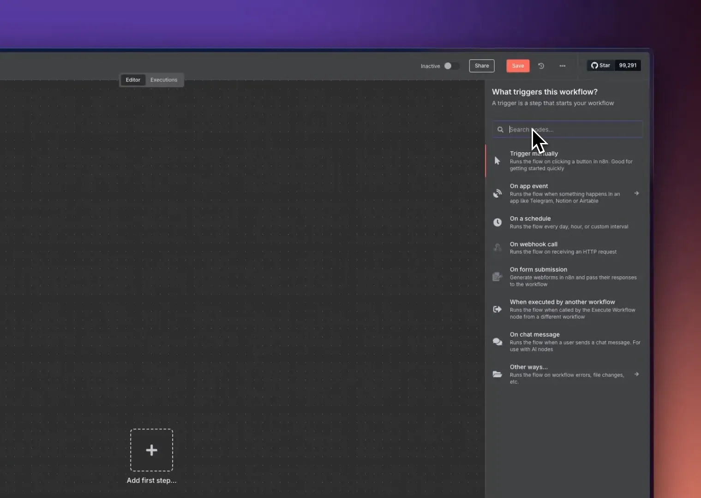
3. Configurando a Autenticação
Depois de adicionar a solicitação HTTP, precisamos configurar a autenticação. Clique em “Authentication” e selecione “Generic OAuth2 API”. Em seguida, crie uma nova autenticação e nomeie-a como “canva demo”.
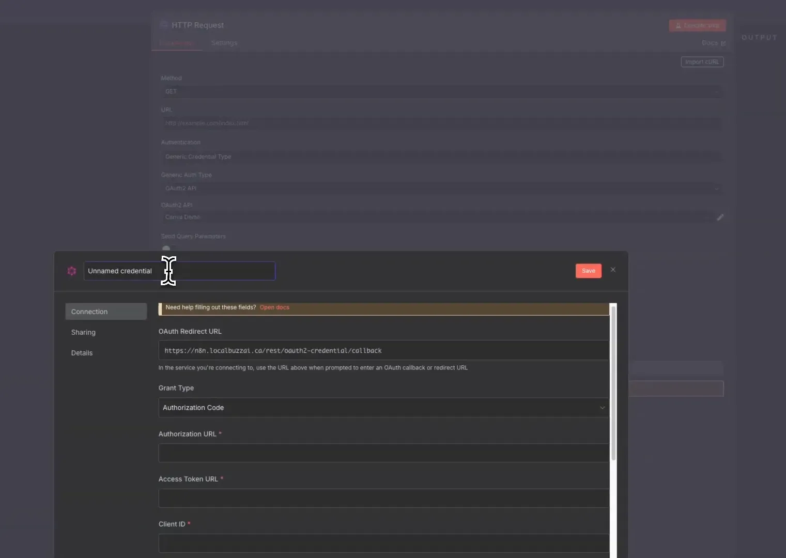
4. Obtendo Informações do Canva
Agora, precisamos ir até o site do Canva. Acesse canva.dev e vá até a seção de integrações.
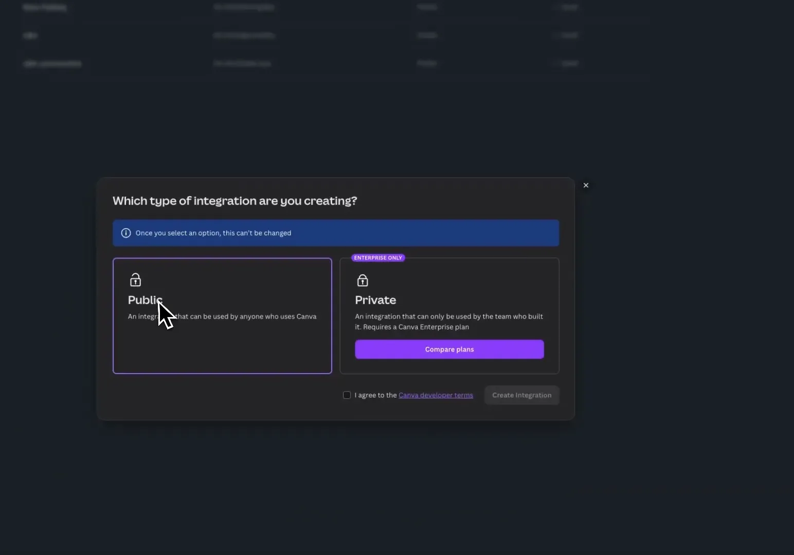
5. Criando uma Nova Integração no Canva
Clique em “Criar nova integração”. Certifique-se de que a integração seja pública e aceite os termos. Dê um nome à sua integração, como “n8n connection demo”.
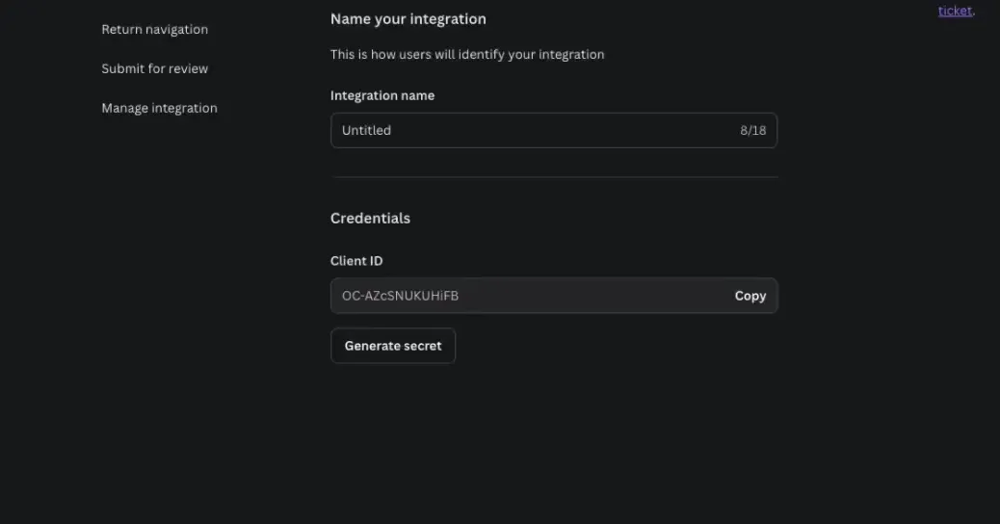
6. Selecionando Escopos
Agora, você precisará selecionar os escopos necessários. Eu recomendo selecionar todas as caixas disponíveis, mesmo que isso não seja a melhor prática em termos de segurança, pois precisaremos de acesso à maioria dos recursos.
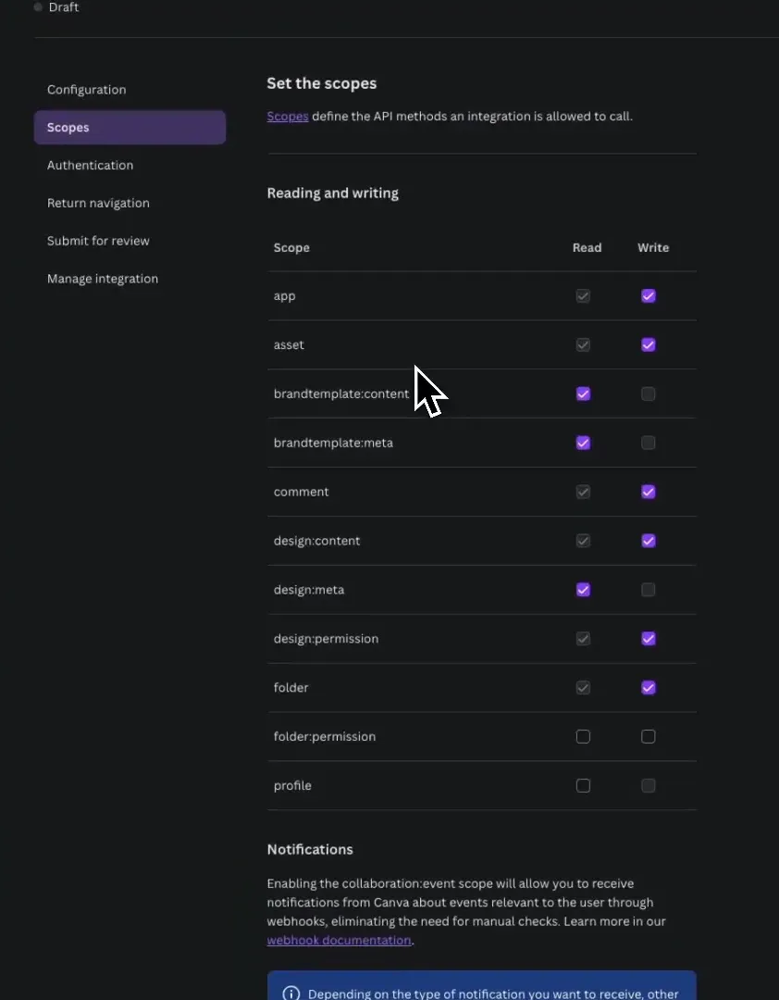
7. Configurando o URL de Redirecionamento
Volte para o n8n e copie o URL de redirecionamento OAuth. Cole-o na configuração do Canva.
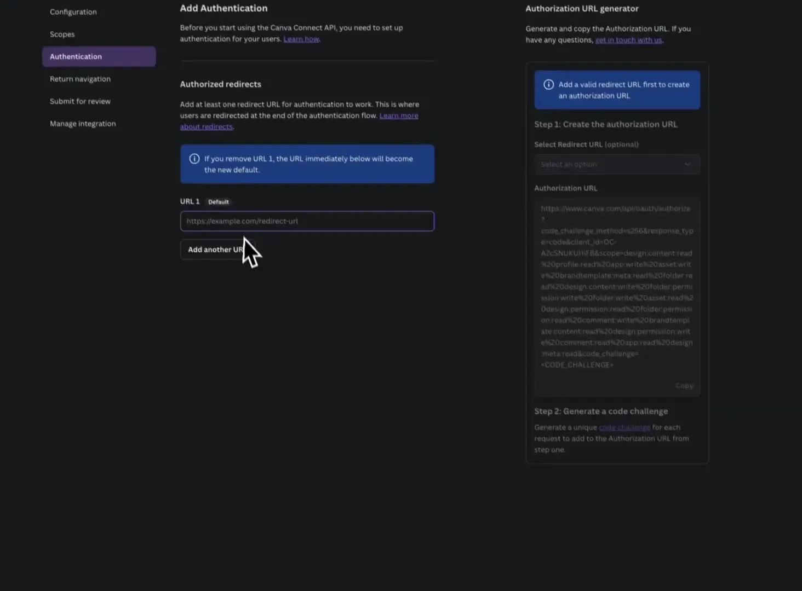
8. Obtendo o Client ID e o Client Secret
Agora, volte para o Canva e copie o Client ID. Cole-o na configuração do n8n. Em seguida, clique em “Gerar segredo” no Canva e copie o Client Secret, colando-o também no n8n.
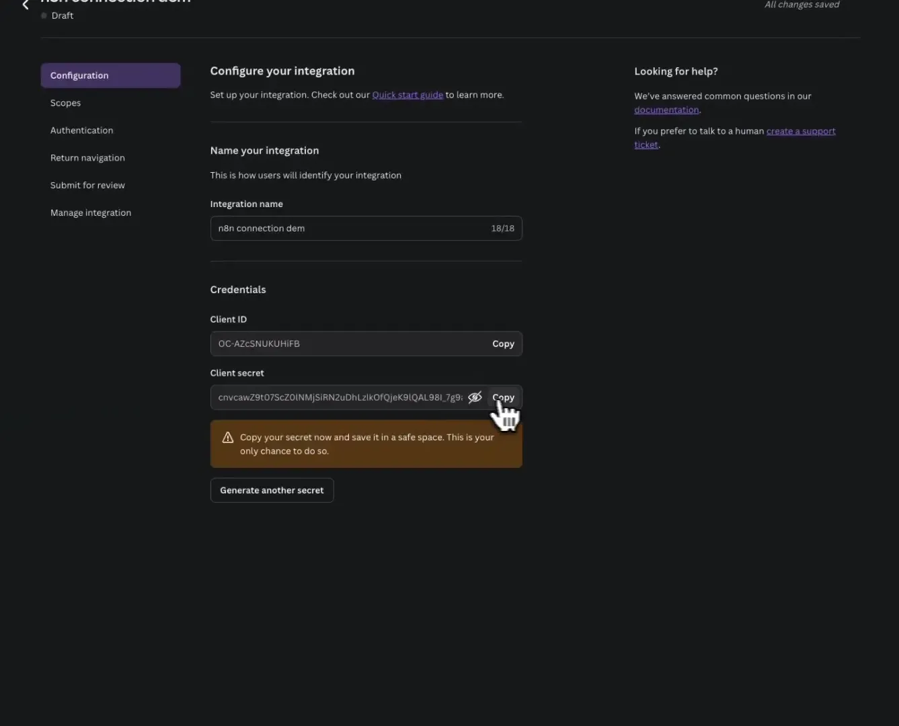
9. Configurando URLs de Autenticação
Preencha os campos restantes com as informações necessárias, como URL de autorização e URL de token de acesso. Utilize os dados que eu já coletei para você em um Google Doc que deixarei na descrição.
Turbine seu Desenvolvimento com Prompts!
Você já sonhou em criar seu próprio aplicativo mas pensou que precisaria ser um gênio da programação? Chegou a hora de transformar esse sonho em realidade! Com as ferramentas no-code de hoje, você pode criar aplicativos profissionais sem escrever uma única linha de código.
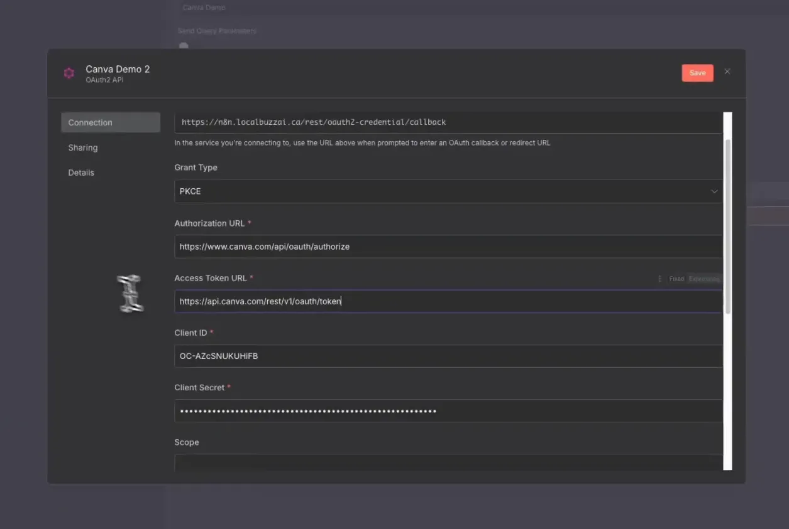
10. Conectando sua Conta
Depois de preencher todas as informações, clique em “Conectar minha conta”. Isso levará você à tela de autenticação do Canva. Clique em “Permitir” e você estará conectado!
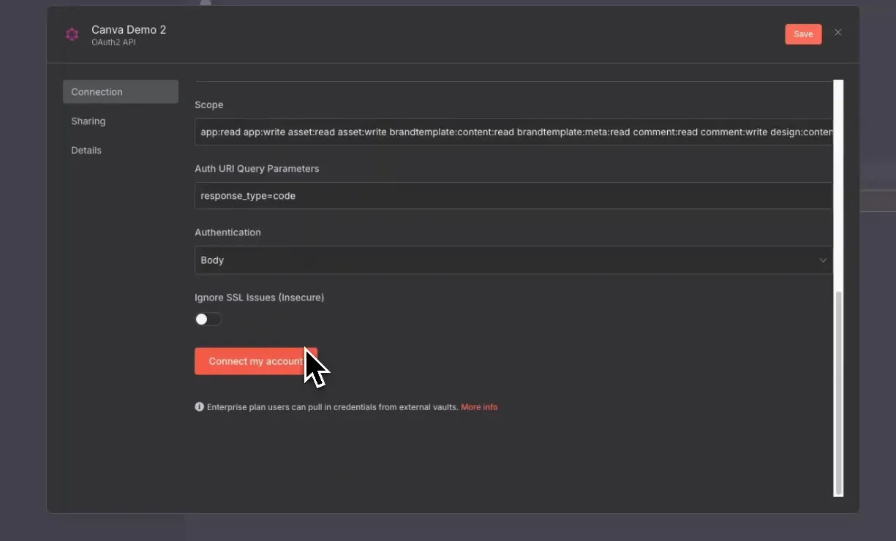
📤 Fazendo Upload de Ativos no Canva
Uma vez que você esteja conectado, você pode começar a fazer upload de ativos. Se você deseja preencher imagens em um modelo do Canva, basta fazer o upload do ativo desejado.
📋 Preenchendo Modelos com Conteúdo Dinâmico
Após o upload dos ativos, você pode usar outro endpoint para preencher automaticamente o modelo. Isso significa que você pode criar designs personalizados em massa, economizando tempo e esforço.
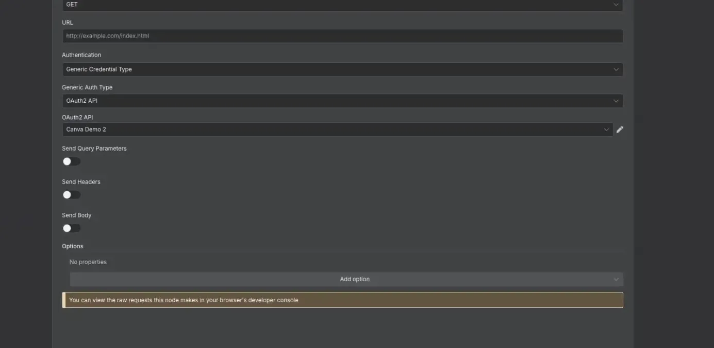
📲 Futuras Automação e Integrações
No futuro, vou mostrar como você pode fazer uploads e postar diretamente nas redes sociais a partir do Canva. Isso abrirá um mundo de possibilidades para automatizar ainda mais seu fluxo de trabalho.
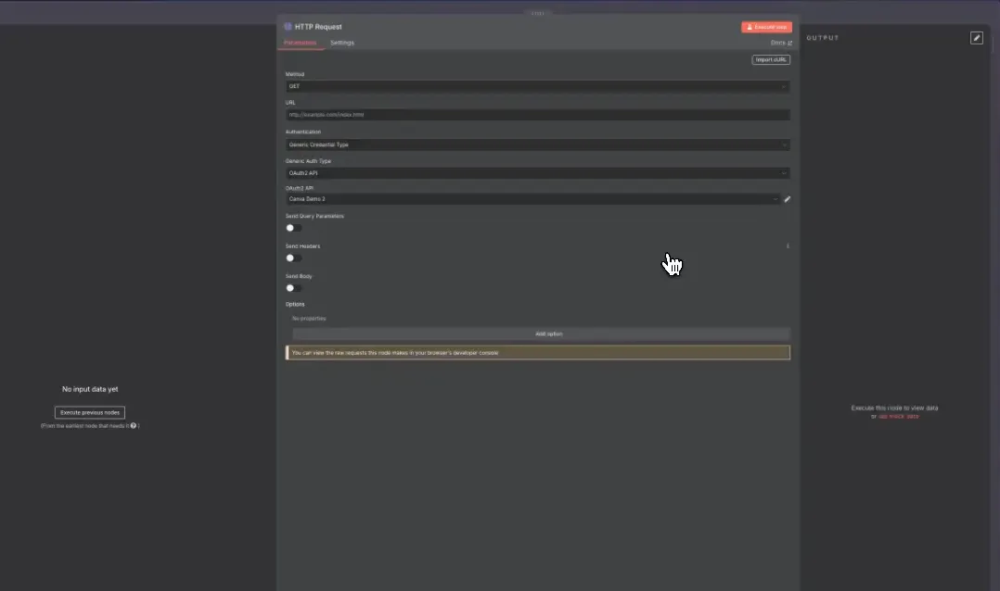
❓ Perguntas Frequentes
1. O que é OAuth2 e por que é necessário?
OAuth2 é um protocolo de autorização que permite que aplicativos de terceiros acessem recursos em nome de um usuário. É essencial para garantir a segurança e a privacidade dos dados ao conectar diferentes serviços.
2. Posso usar o n8n sem programação?
Sim! O n8n foi projetado para ser uma ferramenta de automação de baixo código, permitindo que até mesmo aqueles sem experiência em programação possam criar automações eficazes.
3. O que posso automatizar no Canva?
Você pode automatizar uma variedade de tarefas no Canva, incluindo o upload de ativos, preenchimento de modelos, e até mesmo a publicação em redes sociais.
🌟 Conclusão
Conectar o Canva ao n8n pode parecer um desafio no início, mas seguindo este guia passo a passo, você poderá automatizar seu fluxo de trabalho de forma eficaz. Isso não só economiza tempo, mas também permite que você se concentre em aspectos mais criativos do design. Espero que você tenha encontrado este tutorial útil e que esteja animado para explorar as inúmeras possibilidades que essa integração oferece!
Não se esqueça de dar um like, se inscrever e ativar o sininho para mais dicas de automação e futuros vídeos sobre uploads e postagens diretas nas redes sociais!